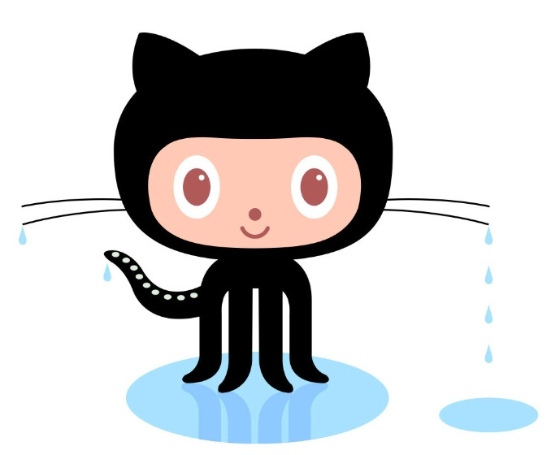

All about GitHub
- Q. What is a version control system
- A. Version control is a system that records changes to a file
or set of files over time so that you can recall specific versions later
- Q. What is Git?
- A. Git is a distributed version control system that tracks changes in any set of computer files,
usually used for coordinating work among programmers
- Q. What is Github?
- A. GitHub is an Internet hosting service for software development and version control using Git
- Q. What is the difference between Git and Github?
- Git is a tool that's used to manage multiple versions of source code edits that are then transferred to files in a Git repository,
GitHub serves as a location for uploading copies of a Git repository
- Q. Who started Github and how was it started
- A. GitHub was a bootstrapped start-up business, which in its first years provided
enough revenue to be funded solely by its founders, Tom Preston-Werner, Chris Wanstrath, P. J. Hyett and Scott Chacon.
- Q. What company owns it now?
- A. In 2018 Microsoft acquired Github
- Q. How much does a Github account cost?
- A. Depending on the planned use of the account, there are three differnt prices: $0 for a free account, $44 per year for a team account, and
$230 per year for an Enterprise account
- Q. What is the Octocat?
- A. The Octocat is an octopus and cat hybrid that plays as the mascot for Github

Git/Github Terms:
- Repository:
- -A repository is the most basic element of GitHub. They're easiest to imagine as a project's folder.
A repository contains all of the project files (including documentation), and stores each file's revision history
- Commit:
- -A commit, or "revision", is an individual change to a file (or set of files).
- Fork:
- -A fork is a personal copy of another user's repository that lives on your account.
Forks allow you to freely make changes to a project without affecting the original upstream repositor
- Push:
- -To push means to send your committed changes to a remote repository on GitHub.com.
- Pull request:
- -Pull requests are proposed changes to a repository submitted by a user and accepted
or rejected by a repository's collaborators
- Workflows:
- A workflow is an automated process that you set up in your GitHub repository.
You can build, test, package, release, or deploy any project on GitHub with a workflow.
- Issues:
- -Issues are suggested improvements, tasks or questions related to the repository.
Issues can be created by anyone (for public repositories), and are moderated by repository collaborators
- Raw button:
- -With the raw view, you can view or copy the raw content of a file without any styling
- Blame button:
- -With the blame view, you can view the line-by-line revision history for an entire file,
or view the revision history of a single line within a file